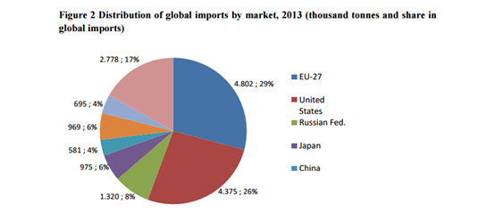

|
Kuk valley of New Guinea around 8000 BCE is considered to be the area where humans first domesticated bananas with known instance by archeologists. From New Guinea to Philippines, bananas spread out far and wide in all directions across the tropics. Plantains is believed to be grown in eastern Africa as early as 3000 BCE and in Madagascar by 1000 BCE. It is also interesting to know that bananas may have arrived in South America well ahead of the Europeans. It was carried by sailors of Southeast Asians to the South America as early as 200 BCE. |
|
|  |
Bananas had two major uses during colonial ages. First, it was a valuable intercropping plant. The cultivation of coffee, cacao and pepper relies indirect and varied times of sunlight. Thus, bananas can fit properly into this situation. With its leaves, they provide shelter for other more important plantation commodities. To put it in another way, bananas were valuable not for their fruit, but for their leaves. Secondly, the bananas can offer the slave population with food. Not only did bananas provide a non-labor intensive crop for plantation works, the fruit is also easily digested and quickly transformed into accessible glucose, which provides perfect sources of calories for the heavy work labors on the sugarcane plantations. It helped plantations to become ubiquitous throughout Central and South American countries. It was even naturalized and integrated into local cultures that they became synonymous with certain countries cuisines, such as Cuba. |